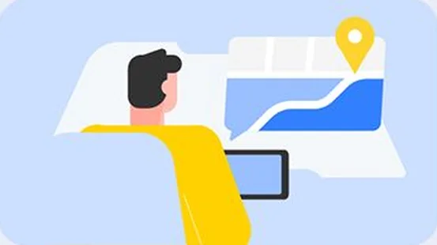
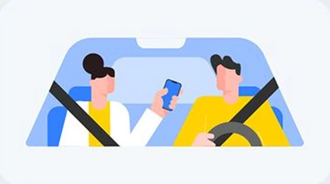
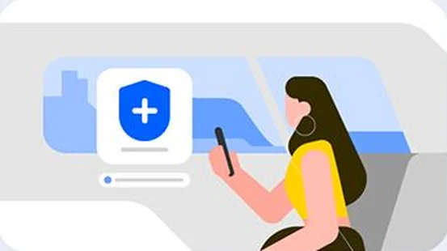
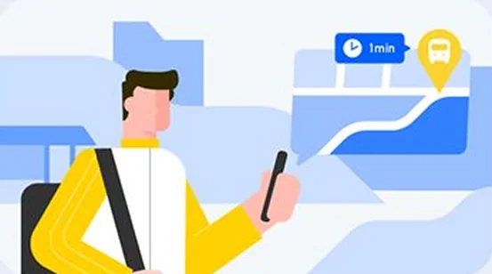

1. Design goals
Routiq is a ride-hailing app for India (rider app and driver app in one). The interface is built around four goals: a booking takes very few taps, the rider always knows what is happening, nothing ever blocks a booking, and the app stays readable in sunlight (light mode) and at night (dark mode).
| Goal | How the design delivers it |
|---|---|
| Fast booking | Home shows recent places and the vehicle tiles (Auto, Trip, Bike, Reserve, Carpool). Choosing a tile carries the vehicle through to the ride list and pre-selects it. |
| Always informed | One progress bar on the trip screen with minutes to arrival counting down (4, 3, 2, 1, arrived), a moving vehicle on the map, and a share link anyone can open. |
| Never blocked | No surge wording is shown. Prices show before and after an offer. The rider alone chooses the route; the shortest is the default. |
| Private by default | While searching, the rider sees no driver names. After a ride the driver card shows only what is needed (name, vehicle, plate, rating). |
| Works in any light | Light and dark palettes, with accent text colours checked for 4.5:1 contrast. |




2. Design language
Colour (design tokens in constants/theme.ts)
Every screen reads colours from one place, so light and dark mode switch together and nothing uses a raw hex value.
#FFFFFF / #121212
#F3F3F3 / #232323
#000 / #FFF
#6B6B6B / #A3A3A3
#276EF1
#05944F
#E11900
#D93A1B
Type
Plus Jakarta Sans in five weights (Regular, Medium, SemiBold, Bold, ExtraBold). Body text is 16px. Nothing is below 12px.
Shape and layout
Rounded cards (14 to 18px radius), a floating pill tab bar (Home, Services, Activity, Account) that takes real space at the bottom of the screen so taps reach it, 20px side gutters, black primary buttons, grey secondary buttons.
Motion
Animated logo on the splash screen, intro slides with illustrations, a moving vehicle sprite on the map, and a single progress bar with the percentage and minutes left.
3. Screen map
| Area | Screens | Purpose |
|---|---|---|
| First run | Splash, intro slides, sign-in (phone, Google, Apple) | Show the brand, explain the app, get the rider in. |
| Rider tabs | Home, Services, Activity, Account | Book, browse services, see past and upcoming rides, manage the profile. |
| Booking | Where to, Choose a ride, Confirm pickup, Schedule picker | Pick places, vehicle, time, payment and offers. |
| During a ride | Trip (progress bar, map, vehicle), Chat, Share trip, Shared ride page | Track the driver, talk to them, share the ride. |
| Money | Wallet, Add cash, Pay with, Promo codes, Routiq One (paywall), Referral | Pay, top up, apply offers, join the membership. |
| Safety | Safety centre, Trusted contacts, RideCheck, Audio recording, Safe arrival, Women rider preference, Account checkup | Make the rider feel safe and in control. |
| Help and data | Help, Help topic, Inbox, Notifications, Commute, Favourites, Data and privacy | Support and personalisation. |
| Driver app | Driver home (map first), request sheet with slide to accept, earnings, status, driver account and documents | Let a driver go online, take trips and track earnings. |
4. Key user flows
Book a ride now
Book for later
Share a ride
Join Routiq One
Driver takes a trip
5. UX principles applied
| Principle | In the app |
|---|---|
| Consistency | Same header, buttons, cards and icons everywhere; one colour source. |
| Feedback | Loading skeletons, a single progress bar with minutes and percent, notifications for booked, arriving and arrived (with a ride card), offline banner when the connection drops. |
| Error prevention | Confirmation sheet before hard-to-undo actions (for example cancelling the Routiq One membership). |
| Easy reversal | Cancel for scheduled rides, a Start now option, back on every screen, a logout in Account. |
| Recognition over recall | Recent places, favourites, saved commute, vehicle pictures that match the real vehicle (auto shows an auto, car shows a car). |
| User control | The rider picks the route, the vehicle, and who sees the ride; notification frequency is Fewer, Daily or Often. |
| Minimal design | One progress bar instead of two; offers shown as old price crossed out then new price. |
6. Accessibility and quality check
The app was reviewed against the UI/UX Pro Max checklist (accessibility, touch, typography, forms, navigation).
Text contrast (WCAG minimum 4.5:1 for normal text)
| Text colour | Light mode (on white / card) | Dark mode (on page / card) | Result |
|---|---|---|---|
| Main text | 21.0 / 18.9 | 18.7 / 15.7 | Pass |
| Muted text | 5.3 / 4.8 | 7.4 / 6.2 | Pass |
| Blue text (before) | 4.6 / 4.1 | 4.1 / 3.4 | Fail on cards and in dark |
| Green text (before) | 3.9 / 3.5 | 4.8 / 4.0 | Fail |
| Red text (before) | 4.8 / 4.4 | 3.9 / 3.3 | Fail on cards and in dark |
| Accent text (after fix: blueT, greenT, redT, promoT) | 5.1 to 5.3 | 6.2 to 7.6 | Pass |
Other checks
| Check | Status |
|---|---|
| Touch targets at least 44×44 | Round icon buttons enlarged with a hidden touch area; bottom tabs are 60px tall. |
| No text under 12px | Six 11px labels raised to 12px. |
| Icon-only buttons have a name for screen readers | Shared icon button done. Other icon-only buttons still to label. |
| Light and dark mode | Both supported, with a system option. |
| Reduced motion setting respected | Not yet. |
| Works with no sign-in for shared links | Shared ride page needs no account. |
7. Known limits and next steps
- Label the remaining icon-only buttons, and honour the phone's reduce-motion setting.
- The live map in a shared link needs the tracking server hosted online (it runs on the developer's laptop today).
- Scheduled rides remind the rider but do not start by themselves at the set time.
- Screenshots of each screen can be added to this document once a final build is on a phone.